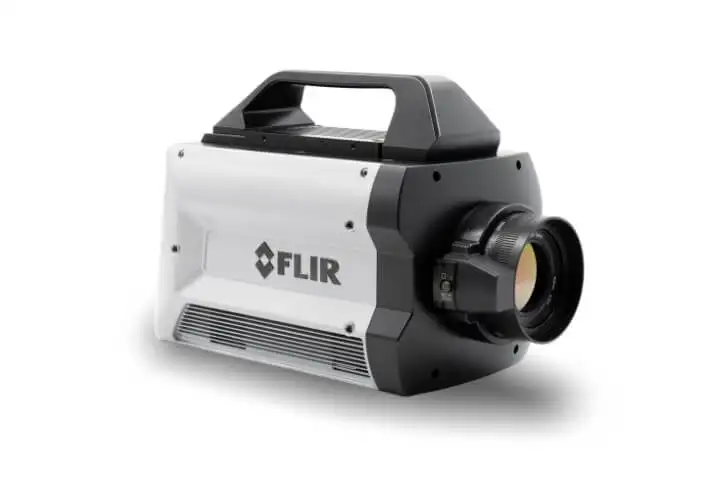
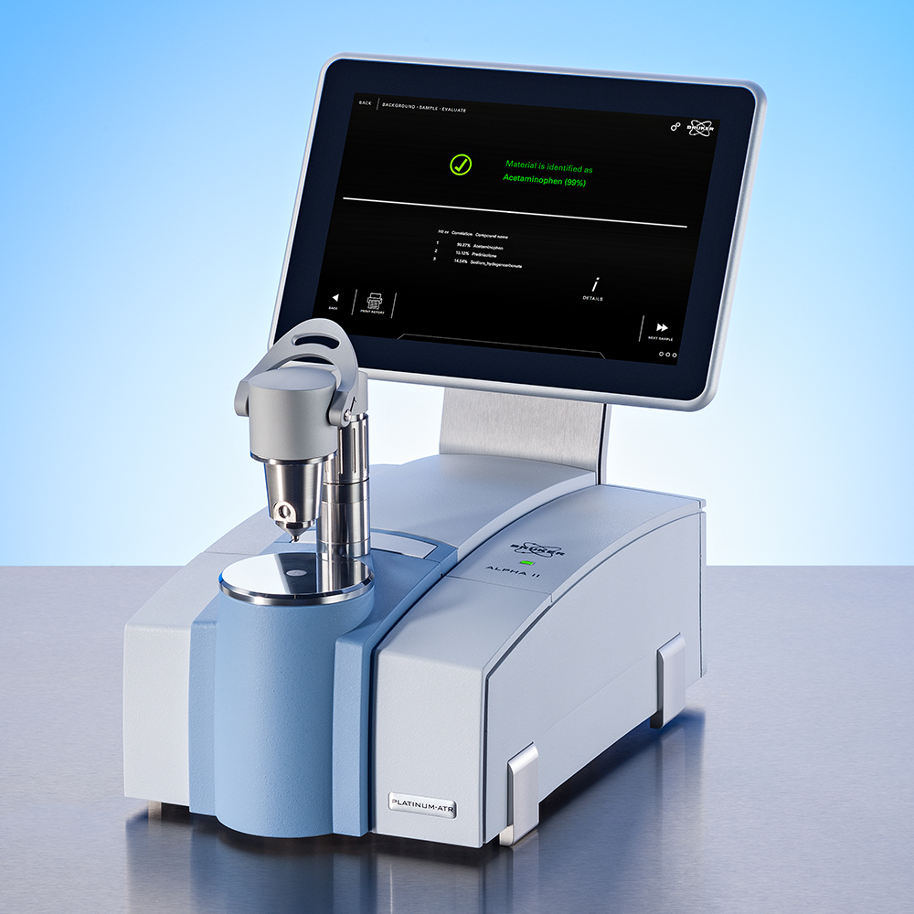
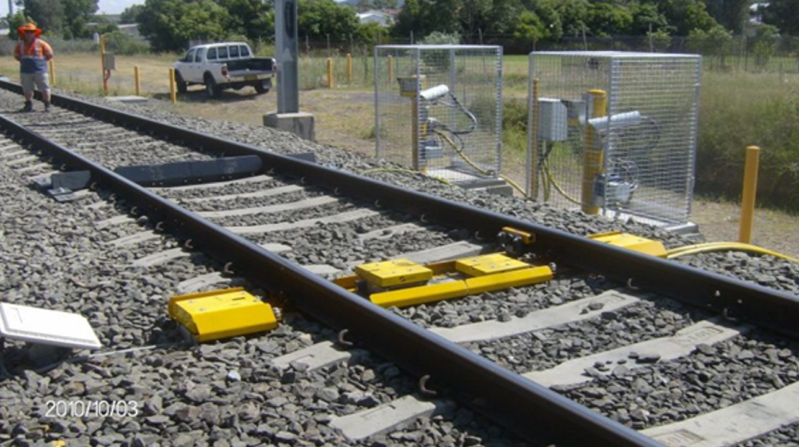
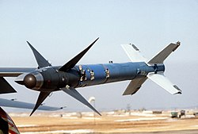
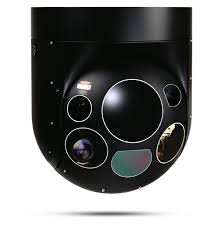

Antimonide (InSb) là vật liệu bán dẫn nhóm III–V có khe năng lượng nhỏ nhất và độ linh động điện tử cao nhất trong số các hợp chất III–V, nhờ đó được sử dụng rộng rãi trong các thiết bị hồng ngoại, cảm biến ánh sáng và cấu trúc điện tử tốc độ cao (Springer).
Do vùng cấm rất hẹp và độ linh động điện tử cực cao, InSb được sử dụng mạnh trong:
InSb là bán dẫn vùng cấm hẹp (Eg ≈ 0.17–0.18 eV) → nhạy trong dải 1–5 µm. Dùng trong các bộ phận cảm biến hồng ngoại (IR detectors) với 3 cơ chế chính:
1. Photovoltaic (Quang điện) - Chuyên dùng để "Chụp ảnh" (Imaging)
- Cơ chế: Khi photon IR đi vào, nó kích electron vượt qua vùng cấm → tạo ra điện áp ngay tại mối nối PN. Mỗi điểm ảnh là một diod nhỏ, nên có thể tạo mảng pixel rất lớn để dựng ảnh nhiệt độ phân giải cao.
- Ứng dụng: Làm Camera nhiệt (Thermal Camera), kính nhìn đêm quân sự, đầu dò tên lửa tầm nhiệt.

Camera nhiệt khoa học hiệu năng cao (High-performance Cooled InSb Camera) sử dụng cơ chế Photovoltaic để đạt độ nhạy và tốc độ khung hình cao.
2. Photoconductive (Quang dẫn) - Chuyên dùng để "Đo lường" (Sensing)
- Cơ chế: Photon làm tăng số electron tự do trong vật liệu, khiến điện trở giảm. Dòng điện thay đổi tỷ lệ với cường độ bức xạ → rất phù hợp làm cảm biến đơn điểm để đo “nhiệt bao nhiêu” hoặc “có khí gì không”.
- Ứng dụng: Làm Súng đo nhiệt độ (loại bắn lên trán hoặc đo máy móc), máy đo khí thải, hệ thống phân tích trong phòng thí nghiệm.

Máy quang phổ hồng ngoại (FTIR): Sử dụng cảm biến InSb quang dẫn đơn điểm (Single element) để phân tích chính xác thành phần hóa học.
3. Photoelectromagnetic (PEM) - Chuyên dùng cho "Môi trường bình thường"
- Cơ chế: Ánh sáng tạo ra dòng hạt tải, dòng này đi qua một vùng có từ trường → sinh ra điện áp ngang do hiệu ứng từ.
- Ưu điểm: Hoạt động được ở nhiệt độ phòng (Room Temperature), không cần làm lạnh như PV và PC.
- Ứng dụng: Giám sát tia laser công nghiệp, đo tốc độ cao trong các nhà máy, thiết bị đo hiện trường.

Hệ thống Hot Box Detector đường sắt: Sử dụng cảm biến InSb PEM phản hồi nhanh, không cần làm lạnh để đo nhiệt độ trục tàu tốc độ cao.
Nhờ khả năng phát hiện nhiệt độ cực nhạy, InSb đóng vai trò cốt lõi trong:
- Camera nhiệt (Thermal imaging): Hệ thống tạo ảnh hồng ngoại nhiệt.
- Mechanically-scanned IR imaging: Hệ thống tạo ảnh hồng ngoại quét cơ học (công nghệ cũ nhưng độ chính xác cao).
- Terahertz imaging: Hệ thống tạo ảnh Terahertz (THz), InSb được dùng trong các bộ điều biến và cảm biến THz.
- Bandgap detector array (AIM-9X): Mảng cảm biến vùng cấm trong tên lửa AIM-9X.

Tên lửa AIM-9: Sử dụng đầu dò mảng pha (Focal Plane Array) InSb để truy tìm mục tiêu nhiệt.
- Airborne navigation & Precision targeting: Định hướng trên không và định vị mục tiêu chính xác.

Hệ thống trinh sát đường không (Airborne Turret): Sử dụng mảng cảm biến InSb MWIR để dẫn đường và định vị mục tiêu chính xác.
- Marine IR systems: Hệ thống hồng ngoại trên tàu biển / hải quân.
- Spectrometers & Telescope sensors: Máy quang phổ và cảm biến dùng trong kính thiên văn.

Ảnh thiên văn hồng ngoại: Cảm biến InSb trên kính thiên văn giúp quan sát các vật thể trong vũ trụ bị che khuất bởi bụi khí.
- Optoelectronics MWIR: Các thiết bị quang điện tử dải 3–5 µm.
InSb có độ linh động electron (Mobility) lớn nhất trong mọi vật liệu bán dẫn khối (≈77,000 cm²/V·s ở 300 K). Nhờ đó được dùng cho:
- Transistor hiệu ứng trường (MESFET, HEMT): Các loại transistor tốc độ cao nhờ điện tử di chuyển rất nhanh trong kênh dẫn.
- Điện tử tốc độ cao / công suất thấp: InSb cho phép xử lý tín hiệu nhanh nhưng tỏa nhiệt ít, phù hợp cho mạch cao tần.
- Galvanomagnetic sensors (Hall, magnetoresistance): Hiệu ứng Hall, Cảm biến từ điện trở → Dùng trong đo từ trường nhờ độ linh động electron lớn, cho độ nhạy rất cao.
- THz generators / Nanowire devices: Khai thác độ linh động cao và vùng cấm hẹp của InSb để tạo ra và phát hiện sóng terahertz.
Ảnh hiển vi điện tử (SEM) của mảng dây nano (Nanowire arrays) InSb